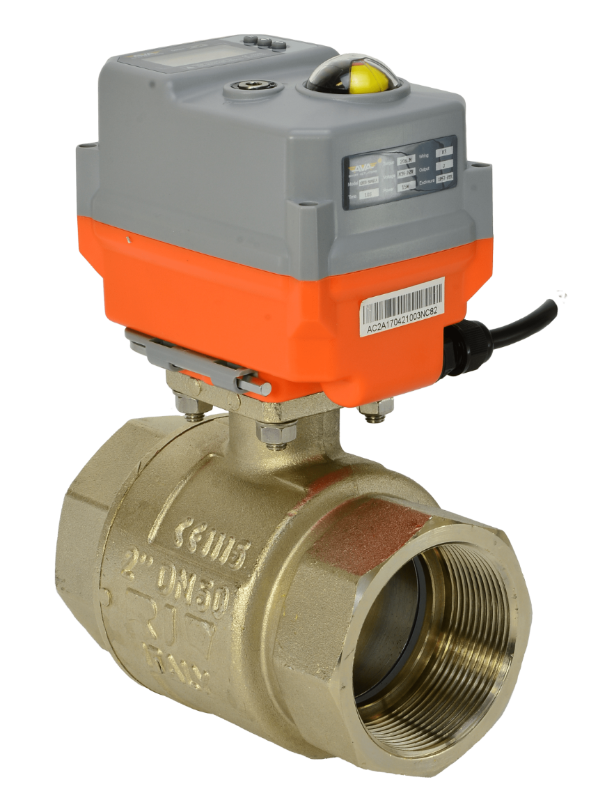

Methods of valve actuation fall into one of the following categories:
1.Linear
2.Part-turn
3.Multi-turn
Each of the above methods can be powered by one of the following sources:
1.Hydraulic
2.Electric
3.Pneumatic
Rotary actuators vary in terms of actuator torque and range of motion. Depending on the valve’s design, the stem may rise during rotation or without rotation. Common ranges of motion include 90-degree (part-turn), 180-, 270-, and 360-degree (multi-turn). As such, rotary actuators may be used for valves such as ball, plug and butterfly.
Linear valve actuators differ in terms of valve stem stroke length, number of turns, and actuator force or seating thrust. The term stroke is used to define the travel required to have the valve fully opened to fully closed. Using an actuator with fewer strokes than the valve will "short stroke" the valve and the full control volume rating of the valve will not be realised.
Linear actuators are used to actuate valves such as gate, globe and diaphragm valves.
An electric actuator is a machine that converts electrical energy into rotary torque which is used to drive a valve. Typically, an electrical actuator consists of an electric motor or motors, which produce low torque at high speed. Connected to a gearbox, the speed is slowed and as it does, the torque increases. At the electric actuator’s output drive, the final low speed produces high torque so that the required rotary torque is available at an acceptable speed. Electrical circuits or electronic circuitry is used to control the starting and stopping of the motor when the valve is at the required position.
Three primary methods of electric actuation are detailed below.
AC / DC motors can be used for valve actuation; however, additional control systems are required to provide feedback on the valve position to achieve the required level of control / shut-off. As a result, these motors are less accurate and less reliable than alternative electric actuators.
Servo motors are closed loop motors meaning feedback is provided and the system knows the position of the valve. This allows for fine actuation control. Additionally, servo motors demonstrate superior performance compared with alternative electric actuators at higher speeds.
Unlike servo motors, stepper motors are open loop and provide no feedback. Instead, these motors are reliant on step counts to accurately control the valve position. One disadvantage to this is the tendency of the motor to end up out of sync, hence a loss of accuracy.
A rechargeable battery or an internal capacitor is kept charged and provides the power to send the failsafe actuator to its pre-set failsafe position on the loss of external power. Another way that eliminates any alternate electrical source is by using a mechanical spring which is tensioned by the motor when power is available and released when power fails.
The actuator must deliver enough torque to move and seat the valvewith the minimum power supply available and also maintain the required position (open, closed, or intermediate) under the worst flowconditions that the valve might experience.
The actuator must be capable of completing the travel, that is, 90°,180°, and multi-turn at the required speed.
The actuator must include a device that prevents excessive forcesbeing applied to the valve under adverse power supply conditions.
The actuators fail-safe position must be considered and appropriate systems put in place to facilitate this.